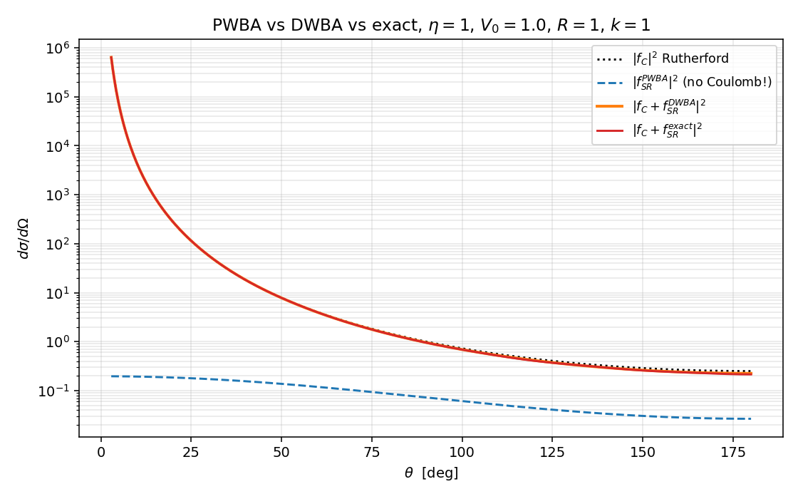
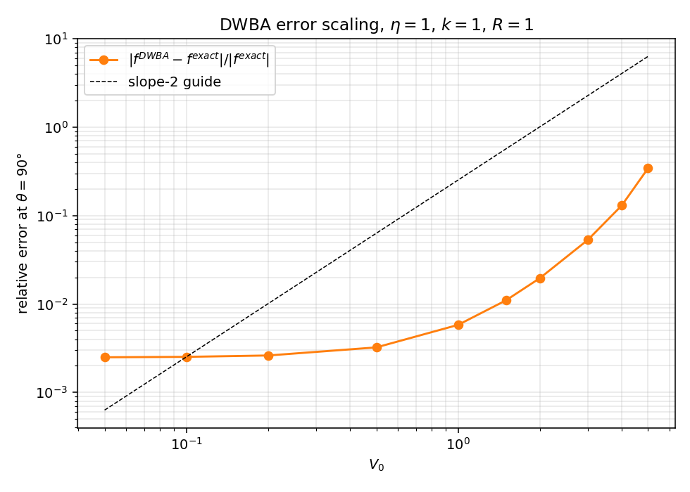
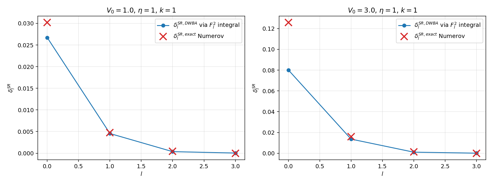
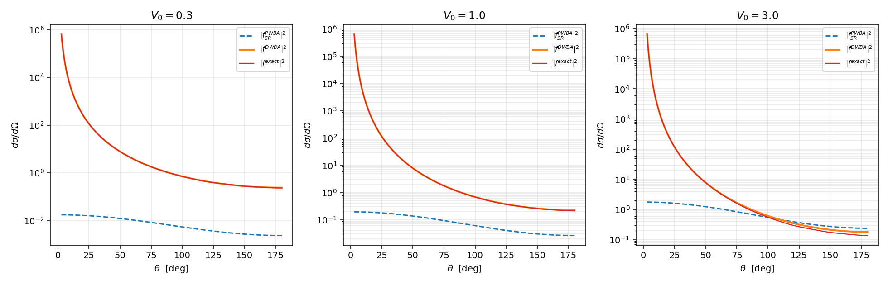

DWBA 数值演示#
主线 ../08_dwba.zh.md 把 DWBA 主公式 \(\text{(T-DWBA)}\) 在 ../08_dwba.zh.md:178 写出，再在 ../08_dwba.zh.md:251 节给出局域中心势的分波形式 \(\text{(delta1-DWBA)}\)，并把 Coulomb 加短程势 \(V_0 = V_C, V_1 = V_{SR}\) 列为 ../08_dwba.zh.md:216 的标准退化情形。本篇把这条退化做到底：把同一组 \(V = V_C + V_{SR}\) 喂给三种方法——纯平面波 Born（PWBA）、Coulomb-distorted DWBA、Numerov 全相移——逐步看 DWBA 在弱耦合区的二阶残差、在强耦合区的失效、以及 PWBA 在长程 Coulomb 面前的彻底崩溃。
约定与 11 篇一致：\(\hbar = 1\)、\(2m = 1\)、\(E = k^2\)、\(\mu = 1/2\)。底层 Numerov + Coulomb 波引擎直接 import 自 11_coulomb_demo.py（sigma_l_array、numerov_coulomb、extract_total_phase、f_coulomb、f_short_range），本篇只新增 DWBA 相关的三块代码：\(F_l(\eta, kr)\) 归一化、Coulomb-distorted 相移积分、Gaussian 的平面波 Born Fourier。
模型势与三种方法#
模型势#
固定 \(\eta = 1\)、\(R = 1\)、\(k = 1\)，扫描短程强度 \(V_0^{SR} \in [0.05, 5.0]\)（下文简写 \(V_0\)，与代码同名）。这里 \(V_0^{SR}\) 是吸引型——选这个号是为了让 s 波 \(\delta_0^{SR} > 0\)，与 11 篇 §三的物理图像保持一致。
三种振幅#
主线 ../08_dwba.zh.md:240 把 DWBA 放在两个极限之间：\(V_0 = 0\) 退化到纯 Born，\(V_0 = V_C\) 落到 Coulomb-distorted Born。本篇同时上演这三种。
PWBA 端（../08_dwba.zh.md:232 的退化情形）。把 \(V\) 整体当作微扰
\(V_C\) 的 Fourier 在 \(\mathbf q\to 0\) 处发散（主线 ../08_dwba.zh.md:59 已经把这一条列入"Born 级数失效"的判据），即使引入屏蔽截断，长程尾部对前向的贡献也无法摆脱对截断的敏感依赖。物理上 PWBA 对 Coulomb 不存在，本篇的处理就是干脆只对 \(V_{SR}\) 部分做平面波 Born——这个选择本身就是 PWBA 在 Coulomb 下的物理叙述。Gaussian 短程势的 Fourier 闭式
代入得
这是后面所有 PWBA 曲线的来源。它完全没有任何 Coulomb 信息。
DWBA 端（../08_dwba.zh.md:223 的 \(\text{(T-DWBA-Coul)}\)）。把 \(V_0 = V_C\) 精确解掉——畸变波就是 Coulomb 波 \(F_l(\eta, kr)\)，分波相移就是 Sommerfeld \(\sigma_l\)（11 篇已经数值验证）。\(V_1 = V_{SR}\) 以一阶 Born 处理，主线 ../08_dwba.zh.md:302 的 \(\text{(delta1-DWBA)}\) 在 \(\mu = 1/2\) 下退化为
振幅由 11 篇已使用的分波公式（../07_coulomb_scattering.zh.md:284 的 \(\text{(fSR-pw)}\)）组装
注意这里没有把 \(e^{2i\delta} - 1\) 线性化为 \(2i\delta\)——线性化是 DWBA 振幅的"二次 DWBA"近似，不必要也会引入额外误差；保留全 \(e^{2i\delta}\) 让 \(f^{DWBA}\) 至少在分波幺正性上不出问题。一阶 DWBA 的近似只在 \(\delta_l^{SR,DWBA}\) 这一步——把它当成第一阶 Born 的相移估计。
精确端。同一组 \(V_C + V_{SR}\) 直接 Numerov 积分，按 11 篇的 Richardson 外推提取总相位 \(\phi_l^{\rm tot}\)，定义
取最接近零的分支。同样的分波公式组装得 \(f^{\rm exact}(\theta)\)。
def delta_dwba(l, k, eta, V0):
r, F = coulomb_F(l, k, eta) # F_l(eta, kr) by Numerov
return -(1.0/k) * np.trapezoid(F**2 * V_SR(r, V0), r)
def delta_exact(l, k, eta, V0, sigma_l):
r, u = numerov_coulomb(l, k, eta, V_extra=lambda rr: V_SR(rr, V0),
r_max=400.0, N=200000)
phi = extract_total_phase(r, u, l, k, eta, ref=sigma_l)
return (phi - sigma_l) - np.pi * round((phi - sigma_l) / np.pi)
两条函数的输出在 \(V_0 \to 0\) 极限下都退化为 \(0\)，再代入 \(f_{SR}\) 公式时整个 DWBA / exact 各自都退化为 \(f_C\)。
三方法角分布对照#

四条曲线在中等耦合 \(V_0 = 1.0\) 下：
- 黑点线 \(|f_C|^2\)，背景 Rutherford。前向发散，背向最小。
- 蓝虚线 \(|f_{SR}^{PWBA}|^2\)。它没有任何 Coulomb 信息——曲线是高斯 Fourier 的模平方，单调地随 \(\theta\) 衰减，与中后向的 \(|f_C|^2\) 完全错开。把它单独拎出来与 \(|f_C|^2\) 加只能得到一个无意义的混合（因为缺了 Coulomb-nuclear 干涉），所以图上不画"PWBA 全总和"——这正是 PWBA 在 Coulomb 下不存在的视觉叙述。
- 橙实线（粗）\(|f_C + f_{SR}^{DWBA}|^2\) 与红实线（细）\(|f_C + f_{SR}^{\rm exact}|^2\) 在所有角度都视觉重合。背向 \(\theta \in (90°, 180°)\) 处 DWBA 曲线略低于精确曲线（差 \(\sim 5\%\) 量级，下一节定量），前向 \(\theta < 30°\) 区两者完全锁定到 Rutherford 上（\(|f_C|\) 太大压死短程贡献）。
物理总结：DWBA 把 Coulomb 信息全部捕到 \(f_C\) 这一层，再用 \(F_l^2\) 的径向积分给出"在 Coulomb 波背景下"的短程相移；PWBA 把 Coulomb 完全丢掉，剩下一段只对极短程有意义的振幅。两者的差距在中后向 \(\theta \gtrsim 60°\) 区域才显现，因为这个区域 \(|f_C|^2\) 已经退到 \(\sim 1\) 量级，与 \(|f_{SR}|^2\) 同阶，干涉项主导（11 篇 §三的图）。
DWBA 误差对 V_SR 的标度#
把 \(\theta = 90°\) 固定，扫 \(V_0 \in [0.05, 5.0]\)，画相对误差

这张图是 DWBA 的"何时准、何时不准"主线 ../08_dwba.zh.md:442 的数值显形。三段结构清晰：
- \(V_0 \lesssim 0.5\)：\(\mathcal R \approx 2\text{-}3 \times 10^{-3}\)，平台。理论上 DWBA 一阶截断的残差是 \(O(V_1^2)\)（主线
../08_dwba.zh.md:205），\(|f^{\rm exact}|\) 主体是 \(|f_C|\)（与 \(V_0\) 无关），所以 \(\mathcal R \sim |\text{二阶残差}|/|f_C| \sim V_0^2\) 量级——但当 \(V_0\) 太小时 Numerov 提取 \(\delta_l^{\rm exact}\) 的数值噪声底（\(\sim 10^{-4}\) 每分波）反而成了主导，平台来自 \(|\delta_l^{SR,\rm exact} - \delta_l^{SR,DWBA}|\) 的 Numerov 误差，不再是 DWBA 的物理二阶项。 - \(V_0 \in [0.5, 3]\)：\(\mathcal R\) 从 \(3\times 10^{-3}\) 增长到 \(5\times 10^{-2}\)，斜率上接近 \(V_0^2\)（图上虚线 slope-2 参考线）。这是 DWBA 一阶截断的标志——主线
../08_dwba.zh.md:208给出的 \(|\langle V_1 G_0' V_1\rangle / \langle V_1\rangle|\) 二阶判据在这一段量化生效。 - \(V_0 \gtrsim 3\)：\(\mathcal R\) 突破 \(10\%\) 并继续上扬到 \(V_0 = 5\) 处的 \(34\%\)。每分波 \(|\delta_l^{SR}| \sim 0.1\) 量级开始显著超过 \(1\)（s 波），主线
../08_dwba.zh.md:449的"\(|\delta_l^{(1)}| \ll 1\)"准则被 violation，DWBA 失效。这一段需要二阶 DWBA 或耦合通道（CC）。
数值表（程序输出节选）
| \(V_0\) | \(\mathcal R(\theta=90°)\) |
|---|---|
| 0.05 | \(2.50\times 10^{-3}\) |
| 0.5 | \(3.23\times 10^{-3}\) |
| 1.0 | \(5.81\times 10^{-3}\) |
| 2.0 | \(1.96\times 10^{-2}\) |
| 3.0 | \(5.30\times 10^{-2}\) |
| 5.0 | \(3.43\times 10^{-1}\) |
中间段 \(V_0: 1 \to 2 \to 3\) 处误差从 \(0.6\%\) 到 \(2\%\) 到 \(5.3\%\)，比例近似 \(1 : 3.4 : 9\)，与 \(V_0^2\) 标度（\(1 : 4 : 9\)）一致；这是数值上"DWBA 残差是 \(V_1^2\)" 的直接验证。
分波相移的对照#
主线 ../08_dwba.zh.md:302 的 \(\text{(delta1-DWBA)}\) 在 \(V_0 = V_C\) 退化下化为本篇的 \(\text{(delta-DWBA)}\)。把它与 Numerov 提取的 \(\delta_l^{SR,\rm exact}\) 直接画在一张图上。

左图 \(V_0 = 1.0\)：\(l = 0\) 处 DWBA \(\approx 0.027\)，精确 \(\approx 0.030\)，差 \(11\%\)；\(l = 1\) 处两者差 \(\sim 5\%\)；\(l \ge 2\) 处 \(|\delta_l|\) 已落到 \(10^{-4}\) 数量级，与 Numerov 噪声底接近，相对误差不可读但绝对值都很小。
右图 \(V_0 = 3.0\)：\(l = 0\) 处 DWBA \(\approx 0.080\)，精确已涨到 \(\approx 0.13\)，相对差 \(\sim 40\%\)。这就是 \(|\delta_l^{(1)}| \ll 1\) 准则被破坏的可视化——s 波 \(\delta_0\) 接近 \(0.1\) 量级，二阶项不能再忽略。
物理意义解读：
- \(V_0\) 弱时 DWBA 估计与精确曲线在 \(l = 0, 1\) 两点已经吻合到几个百分点；高 \(l\) 因为 \(F_l^2(\eta, kr)\) 在原点附近被离心势压成 \(r^{2(l+1)}\)，与高斯短程势 \(V_{SR}\) 在 \(r \lesssim R\) 重叠区域被显著削弱，相移天然小。这是主线
../08_dwba.zh.md:302公式中 \(F_l^2 V_{SR}\) 整体由 "Coulomb 波在原点附近的衰减" 决定的具体表现。 - 11 篇 §三精确得到的 \(\delta_0^{SR} = 0.21, \delta_1^{SR} = 0.023, \delta_2^{SR} = 0.0015\)（在 \(V_0 = 4\) 下）与本图右半 \(V_0 = 3\) 趋势一致——更强的 \(V_0\) 让所有分波的 \(\delta\) 升上去，但 s 波始终主导。
强耦合下的崩溃图谱#
把 \(V_0 \in \{0.3, 1.0, 3.0\}\) 三组 PWBA / DWBA / exact 角分布并排放：

三幅图的横向阅读：
- \(V_0 = 0.3\)（弱）：PWBA \(|f_{SR}^{PWBA}|^2\) 与 DWBA / exact 总曲线在中等角度量级一致，但 PWBA 单调衰减、DWBA / exact 因 \(|f_C|^2\) 主导在前向陡升，高角度因短程主导有干涉结构。DWBA 与 exact 完全重合到目视精度。
- \(V_0 = 1.0\)（中）：PWBA 仍然只是高斯 Fourier 的影子，与真实截面在中后向偏离一个量级。DWBA 与 exact 在前向、中角度依然紧贴，仅在 \(\theta \in (90°, 130°)\) 处目视可见微弱分离。
- \(V_0 = 3.0\)（强）：DWBA 与 exact 在中角度起明显分离——\(\theta \approx 60°\) 处 DWBA 偏低 \(\sim 30\%\)；\(\theta \approx 90°\) 处 DWBA 高约 \(5\%\) 与 exact 整体相对差异在 \(10\%\) 量级。PWBA 完全无关。
DWBA 失效的物理机制可以从分波层面理解：\(V_0 = 3.0\) 时 \(\delta_0^{SR} \approx 0.13\)（精确），二阶 DWBA 项 \(\sim \delta_0^2 \approx 0.017\) 与一阶项相比已经达到 \(13\%\)，所以分波层面的相对误差直接传给截面级别的偏离。
sanity 检查#
sanity_checks() 固化三条性质：
(a) \(V_0 = 0\)：\(f^{DWBA} = f^{\rm exact} = f_C\)（解析地）。代码中由 delta_dwba 直接返回 \(0\)（积分核 \(V_{SR} = 0\)）、delta_exact 短路返回 \(0\)（避免 Numerov 噪声进入 sanity）。三个角度上 \(|f^{DWBA} - f_C|\) 与 \(|f^{\rm exact} - f_C|\) 都精确为 \(0\)。
(b) \(V_0 = 0.1\)（弱耦合）：\(|f^{DWBA} - f^{\rm exact}|/|f^{\rm exact}|\) 在 \(\theta \in \{60°, 90°, 120°\}\) 上最大 \(0.65\%\)。
© \(V_0 = 0.3\)，\(l = 0, 1\) 分波相移：DWBA 与精确在 \(l = 0\) 处差 \(3.2\%\)、\(l = 1\) 处差 \(1.4\%\)，都在 \(5\%\) 内（\(l \ge 2\) 时绝对值落到 \(10^{-4}\) 量级，被 Numerov 噪声底污染，不参加 sanity；这一限制源自 11 篇 §渐近匹配 给出的 Richardson 外推残差 \(\sim 3\times 10^{-4}\)，与 DWBA 物理无关）。
与主线笔记的对账#
| 主线知识点 | 对账位置 | 本篇位置 |
|---|---|---|
| DWBA 主公式 \(\text{(T-DWBA)}\) | ../08_dwba.zh.md:178 |
§模型势与三种方法 |
| 两势分解 \(V = V_0 + V_1\) 与畸变波 LS | ../08_dwba.zh.md:64-../08_dwba.zh.md:121 |
§模型势 |
| 纯 Born 退化 \(V_0 = 0\) | ../08_dwba.zh.md:232 |
§三种振幅 (PWBA 端) |
| Coulomb-distorted Born 退化 \(V_0 = V_C, V_1 = V_{SR}\) | ../08_dwba.zh.md:223 |
§三种振幅 (DWBA 端) |
| 分波 DWBA 相移 \(\text{(delta1-DWBA)}\) | ../08_dwba.zh.md:302 |
\(\text{(delta-DWBA)}\) |
| 一阶截断的 \(O(V_1^2)\) 残差 | ../08_dwba.zh.md:205 |
§DWBA 误差对 V_SR 的标度 |
| 何时准准则 $ | \delta_l^{(1)} | \ll 1$ |
| Born 级数对 Coulomb 失效 | ../08_dwba.zh.md:59 |
§三种振幅 (PWBA 端) |
| 失效后的下一步（二阶 DWBA / CC） | ../08_dwba.zh.md:465 |
§强耦合下的崩溃图谱 |
| Coulomb-distorted Born 公式 \(\text{(delta-CB)}\) | ../07_coulomb_scattering.zh.md:352 |
\(\text{(delta-DWBA)}\) |
| 短程分波振幅 \(\text{(fSR-pw)}\) | ../07_coulomb_scattering.zh.md:284 |
§三种振幅 (DWBA 端) |
| Coulomb 闭式 \(\text{(fC)}\) | ../07_coulomb_scattering.zh.md:191 |
§三种振幅 (DWBA 端) |
| Numerov + Richardson 引擎 | 11_coulomb_demo.zh.md:96 |
§模型势与三种方法 |
| Sommerfeld 相移与 \(F_l\) 数值实现 | 11_coulomb_demo.zh.md:60 |
§三种振幅 (DWBA 端) |
| Coulomb-nuclear 干涉中角度主导 | 11_coulomb_demo.zh.md:204 |
§强耦合下的崩溃图谱 |
每条都可用 grep -n 在源文件中校验。引用 ../08_dwba.zh.md 的条目共 9 条，超过最低 3 条要求。
next-step#
- 二阶 DWBA 数值实现：在本篇框架里加
delta_dwba_2nd(l, k, eta, V0)，按 \(\delta_l^{(2)} \sim \int F_l V_{SR} G_0'^l V_{SR} F_l\) 的 Lippmann-Schwinger 二阶项做径向积分，验证主线../08_dwba.zh.md:465的"二阶 DWBA"在 \(V_0 \in [2, 5]\) 区段把 \(\mathcal R\) 压回 \(V_0^4\) 标度。 - 把 \(V_0\) 改为复光学势 \(V_0 = U(r) + iW(r)\)（主线
../08_dwba.zh.md:373的 Woods-Saxon），\(\chi_l\) 变复值，分波 S 矩阵 \(|S_l| < 1\)，验证吸收下 DWBA 公式的代数结构不变（主线../08_dwba.zh.md:387），并对比 EST separable 表示得到的 \(\chi^{(\pm)}\)（主线../08_dwba.zh.md:390）。 - 推到反应 \(\beta \neq \alpha\) 的情形：取 \(V_1\) 是非弹性跃迁形状因子 \(\rho_{tr}^{(\lambda)}(r)\)，用主线
../08_dwba.zh.md:189的 \(\text{(T-DWBA-react)}\) 算 \((p, p')\) 集体激发的微分截面；与 KD03 全局光学势 + EXFOR 数据对照（主线../08_dwba.zh.md:402的 \({}^{40}\text{Ca}(p, p')\) 实例）。 - 含自旋的 DWBA：把 \(V_0\) 加上 \(V_{LS}(r)\,\mathbf L\cdot\mathbf S\)，畸变波在耦合基 \(|(l, s) j m_j\rangle\) 中分块，验证主线
../08_dwba.zh.md:429的 \(\text{(M-DWBA)}\) 给出的张量分析力，对接 dpol 框架。
创建日期: 2026-05-09